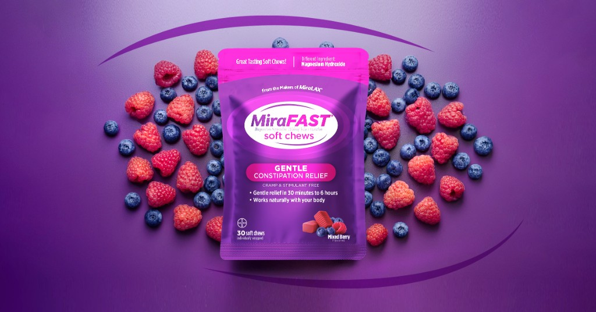

Michael Scrivana · for Sanofi · Global Creative Capability, AI & Innovation Lead
A standard nobody remembers is not a standard — so I put the check where the decision actually gets made.
Five cases from two years spent evolving how visual design gets enabled and delivered inside a regulated healthcare organization: AI-enabled workflows that designers actually adopted, brand and regulatory standards made executable instead of advisory, a knowledge layer that survives the next tool decision, the craft record underneath all of it, and — the part this role is really about — how several hundred people were brought along.
Michael Scrivana — Senior Designer & AI Lead, Product Experience, Bayer Consumer Health. Seven years in a Fortune 100 consumer-health organization: first designing the packaging and launch creative behind ~$79MM in retail sales, then leading AI transformation for the 115-person global design organization that made it. linkedin
The canvas. A React Flow graph editor over image-generation backends, running concept → variant → mask-edit → compliance-check. Each step is a node and the brand context sits in the left rail, so the pipeline itself is the artifact — the next campaign starts from a graph rather than a blank brief.
Nobody was told to adopt any of this. It got used because I went to the team with the deadline, not the team with the org chart — and usage that repeats is the only thing I count. Zero AI literacy to active use across all six craft disciplines, in twelve months.
01
Workflow — a node-based creative pipeline designers chose to use
Generative workflow evaluated, proven, then scaled · a machine-readable brand layer · piloted with the team that had the deadline
Output, on-guideline by construction. Brand guidelines are held as machine-readable rules alongside reference assets and compliance scoring — what I call the brand brain — consulted at every step, so work arrives on-brand rather than being corrected back onto it.One master, many channels. The same graph re-runs across brands and formats. Claritin sequenced behind the One A Day pilot. Work that used to mean a photoshoot and an agency turnaround now takes hours.
The problem
A regulated consumer-health portfolio needs thousands of on-brand variations a year across static, video and 3D — and every one of them has rules attached that a generic image model knows nothing about. The bottleneck was never the idea. It was the distance between the idea and something legally shippable.
What I built
A node-based pipeline where the brand is a first-class input: guidelines encoded as machine-readable rules, reference assets retrievable, compliance scored at every hop. Built solo in React and TypeScript over image-generation backends, deployed on Azure.
How it earned its usage
I did not launch it with the design team. They were my own function and would have been polite about it. I launched it with ecommerce, because they had Amazon Prime Day and a real problem — and we put one SKU through five channels with three regulated tweaks in sixty seconds. Nobody was told to adopt anything; they had a deadline and this was faster. That is the whole method: find the person whose week is actually on fire, and be the thing that puts it out.
60 seconds, five channels, three regulated tweaks
Amazon Prime Day, co-launched with ecommerce rather than design.
On-guideline by construction
Brand rules consulted at every step, not applied as a correction afterward.
Weeks to hours
Replaced a photoshoot-and-agency cycle for concept and variant work.
node-based workflow buildergenerative APIsbrand validationmasters to channel variantsearned adoption
02
Governance — evaluation criteria for AI-assisted output, made executable
A pre-regulatory review gate · designed for calibrated trust · 15–20 minutes to under one
This is what the gate reads. Regulated OTC packaging, where a missing ™ or a stray † is not a typo — it is a regulatory problem that reaches the shelf.And it reads it at line scale. A portfolio's worth of artwork, every variant carrying its own claims, marks and mandatories.
The problem
Packaging artwork goes through legal, medical and regulatory review — a process I have worked closely with for years, which is how I knew where its real cost sat. Anything caught late is expensive; anything missed is worse. The pass that precedes it was manual, slow, and — because it is a search for a single character across dozens of pages — exactly the task human attention is worst at.
What I built
An agent that reads artwork on two channels at once — a pdf.js text extraction and a vision pass — and diffs them against the regulatory and brand-system rules. It catches the single-character marks people miss. Claude Opus on Azure, built for the Graphics Operations AI Workshop and demoed live.
The design decision that mattered
An automated check that reviewers cannot audit is a check they will quietly stop trusting, and then quietly stop using. So the interface is built for calibrated trust rather than for confidence: confidence scores per finding, citation backlinks into the source page, and visual diff overlays. The reviewer can check the machine in seconds. That is why it stayed in the workflow after the novelty wore off — and it is the same reason I would not ship a generative workflow to a creative team without giving them somewhere to look when it is wrong.
15–20 minutes to under one
The pre-review pass, per artwork round.
Catches what people miss
Single-character regulatory marks — ™, † — found by diffing text against vision.
Auditable by design
Confidence scores, citation backlinks, visual diff overlays. Trust you can check.
brand & regulatory validationreview-and-approvalhuman-in-the-loopcatching when the output is wrong
03
Capability — the answer to “which tool do I use?” is not a tool
Standards as structured data · one deployment, three AI surfaces · a capability that outlives the procurement decision
From scattered prose to one machine-readable model. Six disciplines' documentation — brand standards, regulatory artwork rules, consumer research — refactored into canonical objects with stable IDs and typed cross-references, exposed through a single MCP server.What machine-consumable actually looks like. A real cell (left) and the call an agent makes (right): find_canonical, search, list_cells — it reads structure rather than prose and follows typed cross-refs to related cells.
The problem
The organization was running Claude, Microsoft Copilot and internal models at the same time, and the question I got more than any other was which tool do I use? Answering it by picking a winner would have been wrong within a quarter.
What I built
I moved the knowledge out of the tools. A multi-cell MCP server — FastAPI and FastMCP on AWS Lambda and API Gateway, deployed through the company's Terraform module with OAuth On-Behalf-Of — covering six sub-homes across five knowledge domains. One deployment answering from three AI surfaces: the internal assistant, Microsoft 365 Copilot, and Claude Desktop and Code.
Why it belongs in this application
This is the same move as the brand brain, one level up: put the knowledge outside the tool, and meet people wherever they already are. It is also, practically, how a capability lead avoids betting an organization on a vendor. Tools get piloted, scaled, integrated or discontinued; the standards and the knowledge should not have to move each time. The layer that makes a design system, a brand rule or a regulatory requirement queryable is the durable asset — the surface it answers on is a preference. And it is the clearest evidence I ramp an unfamiliar API surface quickly: I read the MCP spec and shipped a conformant multi-tool server against it.
One deployment, three surfaces
Internal assistant, M365 Copilot, Claude Desktop and Code — same answers everywhere.
Standards became queryable
Brand rules and regulatory artwork requirements, readable by any agent.
A new spec, shipped
Conformant MCP server on Lambda with OAuth On-Behalf-Of, via Terraform.
MCP depthintegrationslight back-endsramping a new API surface
04
Craft — I ran the workflow for seven years before I redesigned it
Briefs to assets · design systems and modular content · global masters to local adaptation · accessibility written into the QC gate
MiraFAST Overnight Chewables. I designed the packaging and led go-to-market creative — inception to design lock in a three-week sprint, in-house rather than briefed out. ~$38MM in retail within 15 months, #1 Laxative Soft Chew and #1 Overnight Laxative SKU, launched at 5× the sales velocity of its predecessor.One A Day, at volume. I digitized the brand book into the single standard every agency and internal team worked from, then held consistency across a relaunch of 50+ SKUs and 1,000+ creative assets — and coordinated 700+ product renders for GS1 syndication into EDAM/PIM.

The logo, the system, and the brand launches — plus the storyboards, stage films and digital-shelf work.
Static, video and 3D, by my own hand. The full craft portfolio.
Your posting asks for deep visual design expertise and the judgment to lead transformation — in that order, and rightly. Designers do not take workflow advice from someone who has never had to ship on the Friday. Everything in cases 01 through 03 exists because I had personally felt the thing it removes.
The end-to-end, by name
Briefs to assets — I wrote the design briefs, and the RFPs used to solicit and score agency bids. Brand systems and tokens — I build and maintain the Figma library others design from, and its CSS custom-property token base; I co-authored the inclusive-design standard that put WCAG AA across print, web, mobile, pack and point of sale, with the contrast check written into the QC gate rather than left as a rule to remember. Masters to channel variants — MiraFAST and MiraFIBER from shelf to screen, ~$79MM+ combined. Into the DAM and back out through review — 700+ renders into EDAM/PIM, with the compliance gate in case 02 sitting in front of legal and regulatory.
The part that transfers
Every automation in cases 01 through 03 exists because I had personally felt the thing it removes. I built the artwork gate because I had sat in the review. I built the brand brain because I had written the brand book and watched it get ignored under deadline. I am not guessing at where a creative team's week goes. And I have sat on the buying side of the vendor table — requirements set, RFPs written, proposals scored — which is the same muscle this role needs when it decides what gets piloted, scaled or discontinued.
~$79MM+ combined retail
MiraFAST and MiraFIBER — packaging and launch creative, shelf to screen.
50+ SKUs, 1,000+ assets
One A Day relaunch, consistency held at volume from one digitized brand book.
700+ renders into the DAM
GS1 syndication to EDAM/PIM, aesthetic standard set with render vendors.
briefs to assetsbrand systems & design tokensmasters to channel variantsDAM & review handoffstatic, video, 3D
05
Enablement — what I do when the training works and nothing changes
Curriculum delivered to 100+ · diagnose the moment, not the person · the workshop nobody leaves without having built something
The system a 115-person organization designs from. One token base, the Figma library beside it — built so the standard is the path of least resistance rather than a document people are asked to honor.And the second one, for the science organization. Same discipline, different audience — the AI learning track I am building now covers the Product Experience domain inside a roadmap spanning an organization of 1,000+.
The front door — where the learning resources actually live. Not a deck about adoption: the surface people open when they do not know where to start. A mission line, one sentence of plain English, and a search field. Docs, FAQ, Learn, About, Knowledge — everything tagged and findable from one place. Sole designer, writer and builder; audience is designers and PMs, mostly non-engineers.And the check, again. Ordered steps, one decision at a time, and a progress checklist that saves in the browser — because adults abandon self-serve training when they lose their place, and that is the cheapest possible fix. The program is committed in public too: four outcomes on a 90-day cycle, each carrying a status, two in flight and two named as upcoming rather than quietly implied.
The story I would tell in the first interview
I co-authored a module on writing design briefs and delivered it to 100+ marketers as required training. It worked — briefs measurably improved, and it still runs on the internal learning platform without me. It also produced questions that would not stop. The obvious move was to teach it again, harder. Instead I went and watched what happens when someone sits down to write one, and found the obstacle was never missing knowledge. It was missing information, and the cost of going to find it. So I built the Brief Translator, which closes the gap at the moment of work rather than in a classroom three months earlier.
The workshop that ships software
I facilitate the division's two-day AI hackathons — master classes on AI and vibe-coding as the run-up, domain experts paired with technical champions, coaching through the day, judging at the end. It is a format nobody leaves without having built something. Seven tools were ready to scale after the first event — hours rather than months — and two of those builds outlived the event, including one now launching across its department.
And the honest version
All of that happened somewhere I had seven years of relationships and a mandate. Coming into a global organization from outside, coaching designers in pods and partner agencies who have no reason to take my word for anything, is a harder problem and I would not pretend otherwise. What I would say is that the method does not depend on the mandate. Everything on this page is the same shape: teach the idea, find out why it did not survive the deadline, then change the situation rather than the person.
Zero to active use in 12 months
All six craft disciplines of a 115-person organization. Adoption, not seats.
Seven tools ready to scale
From the first two-day hackathon. Two builds outlived the event.
Prototype, then park or kill
Ship in days against a four-to-six-week agency cycle — and stop the ones nobody uses.
adoption against resistanceworkshops & live buildsdiagnosing the real blockermeasured in usage